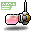
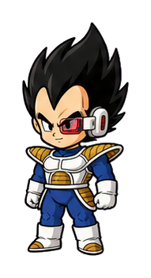
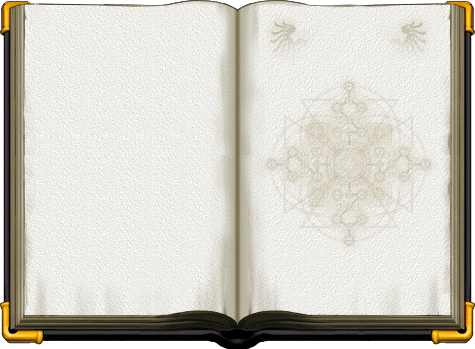
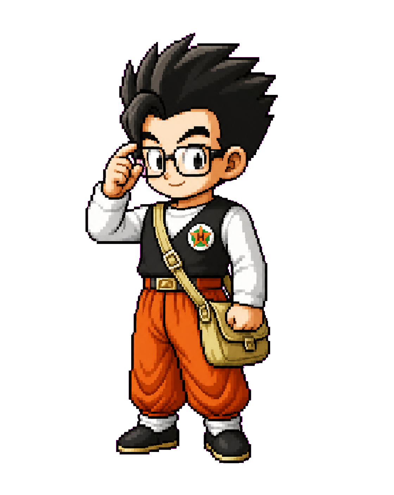
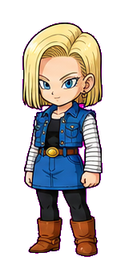
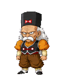
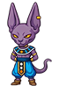
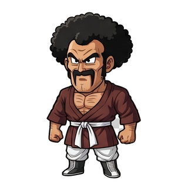

Contents
Quick Start: What New Players Should Do First
- Complete the early tutorial and quest content instead of immediately grinding random mobs.
- Learn the custom NPCs in the Free Market, especially Master Roshi and the progression shops.
- Start the account-wide Achievement Medal system early.
- Get and use a Scouter. Monster Card completion becomes a permanent progression path.
- Do not ignore Party Quests, bossing, Dojo, Maple Leaves and custom shops.
- Begin thinking about the seven Dragon Balls early. Rebirth and Super Saiyan are long-term goals.

Account Progression & Achievements
The Achievement Medal System is account-wide. Completing achievements and milestones improves your long-term account progression rather than only one character.
- Check easy achievements early instead of waiting for endgame.
- Complete milestones naturally while leveling and bossing.
- Daily Quest progression can be replaced/rerolled when supported by the current system.
- Character creation and development can be worthwhile when it contributes to milestones or gives the account a useful farmer/support character.
Scouter & Monster Card Progression

Permanent Progression| Completion | Permanent Reward |
|---|---|
| All 5 Monster Cards for a regular monster | +1 All Stats |
| Complete the card set for a Boss | +1 Weapon Attack +1 Magic Attack |
The Scouter also supports useful drop-information tools such as @whodrops and @whatdropsfrom under the current access rules.



Why Build Alts and Mules?
Extra characters are strongest when they have a purpose:
- Farming mule: fast map clearing for ETC items, cards, equipment and Maple Leaves.
- Bishop/support: Holy Symbol plus strong map-clearing potential makes Priest/Bishop a natural utility farmer.
- Achievement progression: some character development contributes to the account-wide system.
- Different class coverage: some maps, bosses and farming tasks are easier on specific jobs.
Mesos & Money Making
Active Farming
Use a strong AoE/map-clearing character on dense maps. A player-tested example is Mysterious Path 3: clear continuously, pick up equipment and other drops, then NPC unwanted items for mesos.
Player Market
Early on, valuable items such as White Scrolls and Chaos Scrolls can be sold to players to build an initial meso reserve. Check the current market before selling progression items.

Gachapon Value
Gachapon can produce items with player-market value. Income is RNG-based, so treat it as a value source rather than guaranteed meso-per-hour farming.

Trading / Stock Market
Dr. Gero's Stock Market adds a higher-risk trading route around Maple Leaves. This is speculation, not guaranteed profit.
Party Quests, Bossing & Points
Bossing and Party Quests are progression tracks rather than optional nostalgia content.
- Boss Points: defeating bosses awards Boss Points for custom rewards.
- PQ Points: Party Quest rewards were significantly increased in a later beta balance update.
- Old maximum-level restrictions were removed from all Party Quests and many questlines.
- Boss prequests normally matter; convenience skip systems may exist through server shops.

Boss Points Shop
PQ ShopDragon Balls, Shenron & Super Saiyan
Collecting all seven Dragon Balls allows you to summon Shenron and choose special wishes. Super Saiyan is unlocked through a Shenron wish.
Known late Dragon Ball boss rates
| Dragon Ball | Boss | Rate |
|---|---|---|
| #6 | Zakum | 1/5 |
| #6 | Von Leon | 1/5 |
| #7 | Horntail | 1/10 |
| #7 | Chaos Zakum | 1/5 |
| #7 | Pink Bean | 1/2 |

Fishing: AFK Progression
- Fishing Chair and bait are available through the relevant server shop.
- Use
@fishinglistto inspect the current reward pool. - Unique KaiokenMS items can be obtained through Fishing.
- All seven Dragon Balls can be obtained through Fishing, including Dragon Ball #7.
If you are going AFK anyway, Fishing turns idle time into possible progression.
Rebirth: The Endgame Restart
KaiokenMS is not designed as a traditional easy-Rebirth server. Rebirth is an endgame goal.
Core requirement
Reach Level 200 and obtain the required Shenron Rebirth wish after collecting all seven Dragon Balls.
Class restriction
Rebirth does not provide a free switch into an unrelated class family. You remain within your current family and can choose an appropriate branch again as progression resumes.
Recent fixes
- Saving AP after Rebirth was fixed.
- A post-Rebirth skill-upgrade issue incorrectly claiming missing 1st/2nd/3rd Job skills was fixed.
- A bug that incorrectly granted Super Saiyan after Rebirth was fixed.
Gear, Shops & Economy
Dr. Gero
Stock Market / economy system.
Gachapon
Custom Gachapon exchanges and item value.
Boss Points
Bossing converts into a separate progression currency.
PQ Points
Party Quests feed a separate reward track.
- Maple Leaves: central custom progression/economy resource.
- AEE / equipment enhancement: keeps stronger equipment relevant.
- Skill Book Shop: Free Market access reduces dependence on random drops.
- Ore Bank / Scroll Bank: dedicated storage reduces inventory pressure.
- Tradable custom items: many NX/Kaioken items can be sold through Player Shops.
Useful Commands & Quality of Life
| Command / Feature | Purpose |
|---|---|
@gachalist | View available Gachapon rewards. |
@dps | Enter the dedicated DPS testing area. |
@whodrops | Drop lookup under current Scouter/access rules. |
@whatdropsfrom | Inspect monster drops. |
@fishinglist | View Fishing rewards. |
@roll | Quick random roll. |
| Expandable Inventory | Resize the inventory window by dragging its bottom-right corner. |
| Item Vac | Vacuum map drops without requiring a pet under the server's current acquisition rules. |
Recommended Session Routine
- Check Achievement/Daily progression.
- Use available Hyperbolic Time Chamber training.
- Run useful Party Quests and collect PQ Points.
- Kill bosses that advance Boss Points, Dragon Balls, prequests, achievements or boss-card sets.
- Use Master Roshi to choose an efficient training map.
- While grinding, target unfinished 5/5 Monster Card sets instead of farming EXP alone.
- Use your farming/support character when its map coverage is better than your main.
- When AFK, consider Fishing.